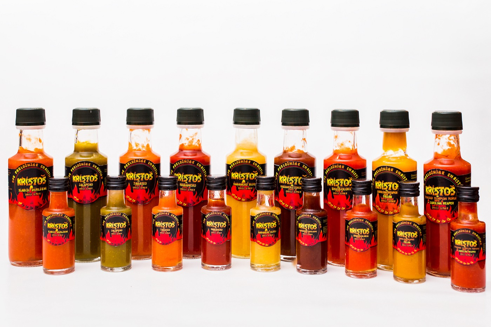
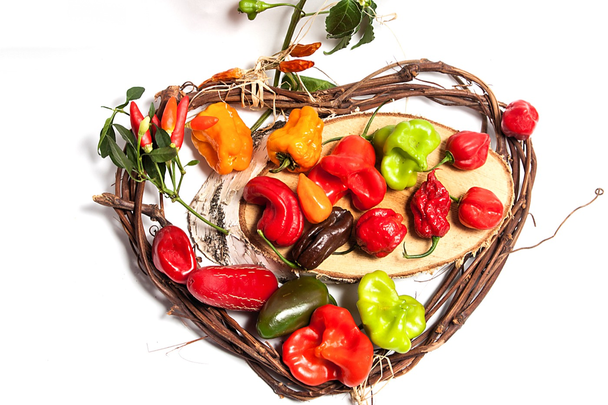
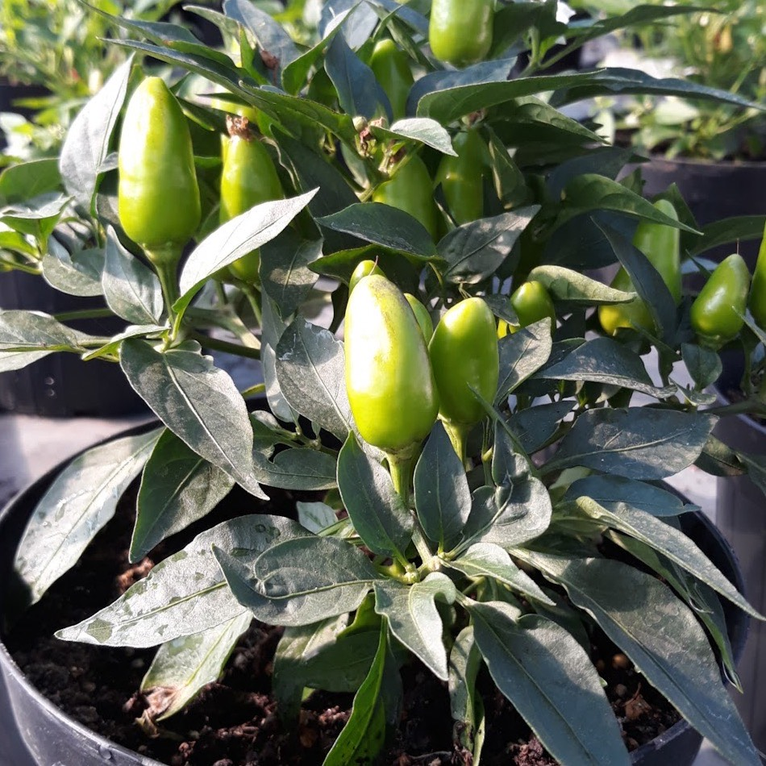
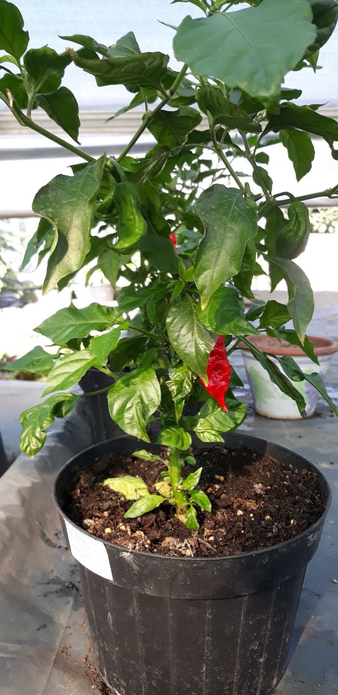
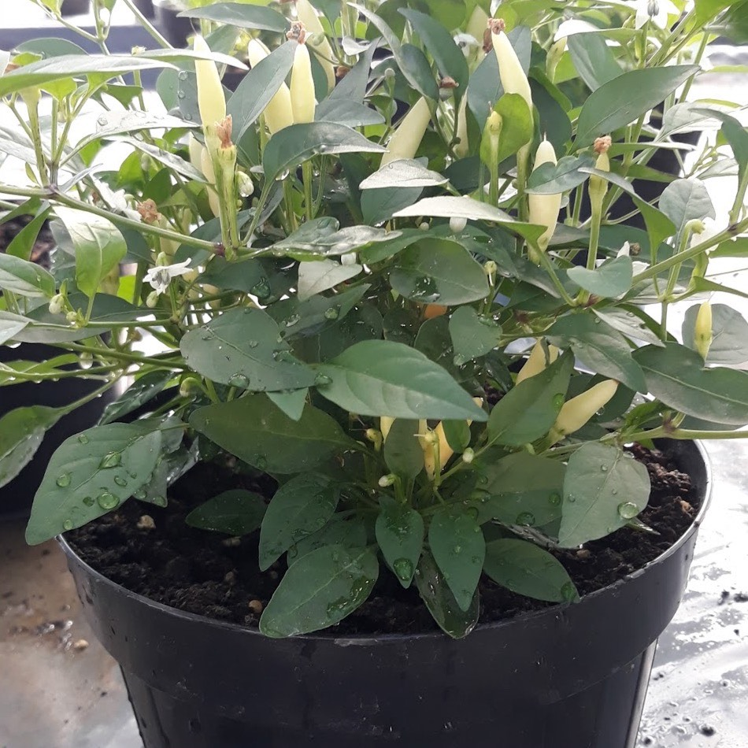

Svježe papričice
Dvadeset sorti, od blagih do najljućih: jalapeño, habanero, bhut jolokia, Carolina Reaper i druge.
SorteObiteljsko gospodarstvo Preložnjak iz Nedelišća uzgaja 20 vrsta čili papričica, od blage do Caroline Reaper. Kod nas ćete naći svježe papričice, ljute umake i posipe, zimnicu, presadnice za vrt i domaće sezonsko povrće.


Dvadeset sorti, od blagih do najljućih: jalapeño, habanero, bhut jolokia, Carolina Reaper i druge.
SorteLjuti umaci nastaju fermentacijom i kuhanjem, a od sušenih papričica radimo suhe posipe za razna jela.
Umaci

Sezonsko povrće iz plastenika i s polja uz Dravu te zimnica, od ukiseljene cvjetače s ljutom papričicom nadalje.
PovrćeLjutina papričice mjeri se u jedinicama Scovilleove ljestvice (SHU). Naš asortiman kreće od obične čili papričice sa stotinjak jedinica pa sve do Caroline Reaper, kojoj je izmjereno oko 2,2 milijuna.
Svatko ima svoj prag. Ako niste sigurni, pitajte nas: rado ćemo vam preporučiti nešto po vašoj mjeri.
Stotinjak jedinica: najblaža papričica u našem asortimanu.

Saša i Christian Preložnjak pokrenuli su obiteljsko gospodarstvo u Nedelišću. Uzgajali su rajčice, krastavce i paprike i prodavali ih ponajviše na sajmovima.
Kad je stigla kriza, razmišljali smo što dalje. Tada se rodila ideja o uzgoju čili papričica. Prvi sušeni habanero naručen je preko interneta, a asortiman smo svake godine širili i istraživali.
Uzgajamo 20 vrsta čilija na tisuću četvornih metara plastenika i još toliko vani, uz sezonsko povrće i presadnice. Umake, posipe i zimnicu radimo sami, a najviše nas veseli eksperimentiranje.
Posjetitelji uz stručno vodstvo isprobavaju različite sorte, treniraju ljuto i ponešto nauče o uzgoju.
Svake godine u listopadu otvaramo vrata OPG-a. Uz vodstvo možete kušati različite sorte, od blagih do najljućih, i saznati kako se uzgaja papričica od dva milijuna jedinica. Točan termin objavljujemo na Facebook stranici.
Pratite nas na Facebooku

★★★★★„Svježe i nadasve kvalitetno prefino domace povrce, chilli papricice raznih vrsta, ljuti umaci i jos pregrst toga u ponudi. Preporuka”
★★★★★„Ljubazna vlasnica, flanci za vrt su prekrasni, a povrće prefino 10+”
★★★★★„Vrlo ljubazni vlasnici, profesionalno i strpljivo odgovaraju na sva pitanja. (…) Uz degustaciju, imali smo i obilazak obiteljske farme i njihovih stanovnika (vijetnamskih svinja).”
★★★★★„Ko voli ljuto ovdje je pravo mjesto za njega, ljuti umaci, začini i ljute svježe papričice.”
★★★★★„Ljubazni domaćini, širok izbor sadnica i proizvoda po pristupačnim cijenama”
★★★★★„Iznimno ljubazna vlasnica nam je ispričala o »vrućim« tajnama i isprobali smo i kupili neke od njihovih proizvoda i bili smo oduševljeni!!! Svakako ćemo se vratiti po još!”
Ponuda se mijenja sa sezonom. Ako dolazite po određenu sortu ili veću količinu, javite se prije dolaska.
| Ponedjeljak | 13:00 – 17:00 |
| Utorak | 13:00 – 17:00 |
| Srijeda | 13:00 – 17:00 |
| Četvrtak | 13:00 – 17:00 |
| Petak | 13:00 – 17:00 |
| Subota | 9:00 – 13:00 |
| Nedjelja | zatvoreno |
Na adresi Žarkovice ul. 1, 40305 Nedelišće, pokraj Čakovca u Međimurju. Upute u Google kartama.
Od ponedjeljka do petka od 13 do 17 sati i subotom od 9 do 13 sati. Nedjeljom ne radimo.
Svježe čili papričice, ljute umake, suhe posipe, zimnicu, presadnice te sezonsko domaće povrće. Ponuda ovisi o sezoni, pa prije dolaska slobodno nazovite 098 570 185.
Carolini Reaper izmjereno je oko 2,2 milijuna jedinica po Scovilleovoj ljestvici. Naš asortiman kreće od obične čili papričice sa stotinjak jedinica pa sve do nje.
Da, sami uzgajamo presadnice čili papričica i povrća. Presadnice pikiramo u proljeće, pa za dostupnost pojedinih sorti nazovite ili pošaljite poruku.